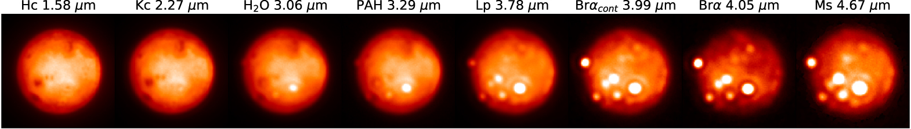

Jupiter's moons from the ground in infrared
Well done, your research proposal was accepted!
Jupiter is in our solar system, so you might think we've discovered all we can about it already. However, as with most of the objects in our solar system, there is still much to learn about its formation history and geology. Observing from the Earth is certainly possible, but since you want to look in infrared you'd better be careful which observatory to use!
You may have been inspired by recent research into the volcanic activity on Io, one of the moons. In June 2019, researchers presented measurements of hotspots on the surface of Io using the infrared telescope at the Keck observatory in Hawaii. Io has over 400 volcanoes which are distributed in specific regions on the surface. By carefully mapping their locations, Astronomers hope to improve our understanding of the processes causing the activity.
